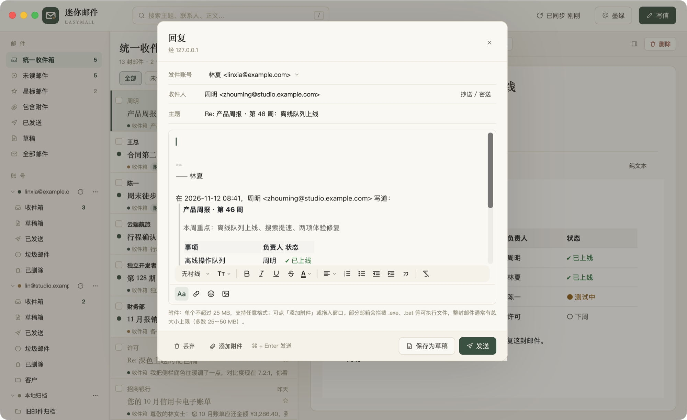
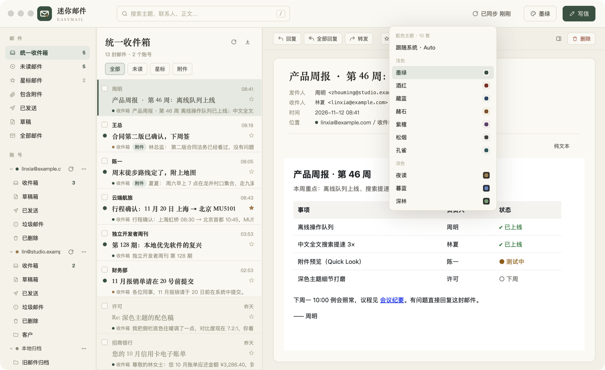
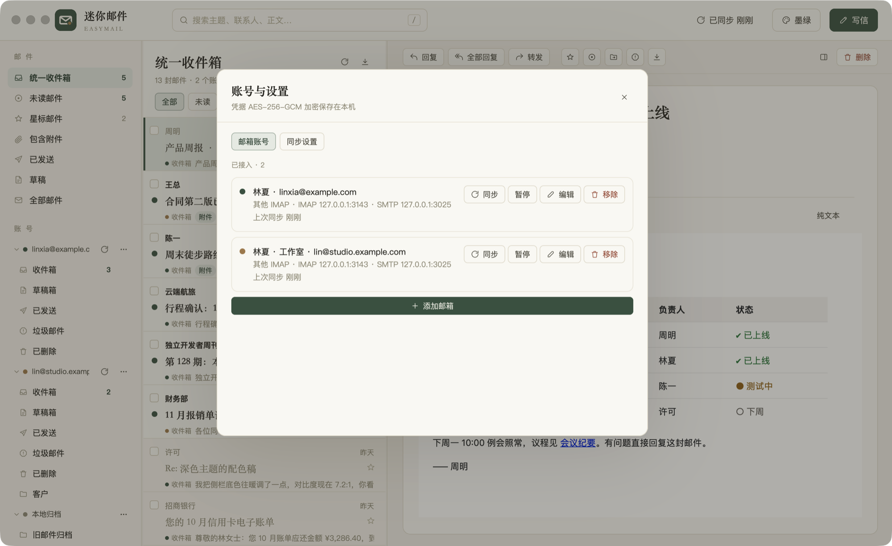

不做花哨的 AI 摘要、不接任何第三方服务。把收信、阅读、搜索、整理这几件事做稳、做快。
Gmail、163 / 126、QQ 邮箱、AgentMail，以及任意 IMAP / SMTP 服务器，一处收齐。
信封与正文存进本机 SQLite 与 .eml。离线时的删除、移动、标记会排队，联网后自动送达。
IMAP IDLE 推送，不支持时 45 秒轮询。菜单栏托盘、Dock 角标与系统通知一个不少。
FTS5 trigram 加中文二元组索引，任意子串都搜得到；支持 from: is:unread has:attachment 等语法。
正文在禁用脚本的 WKWebView 里渲染，CSP 默认挡住所有远程图片，你点「显示图片」才放行。
回复、全部回复、转发、签名、附件、内嵌图片与草稿，⌘ + Enter 发送。
导入 .eml / .mbox 到本地归档；导出 mbox、CSV 或标准 maildir，数据永远带得走。
SOCKS5 / HTTP 代理（含认证），可以按账号单独开启。
从收信、阅读、搜索到离线整理。
富文本编辑器支持字体、字号、列表、引用与对齐；回复时自动带上签名和格式完整的原文引用。

墨绿、酒红、藏蓝、赭石、紫檀、松烟、孔雀七套浅色，夜读、暮蓝、深林三套深色。可以跟随系统自动切换。

迷你邮件直连你的邮件服务器，中间没有云端中转，也没有账号体系。

通用二进制，Apple Silicon 与 Intel Mac 都能直接用。
从 GitHub Releases 下载最新的 EasyMail-x.y.z.dmg。
打开 dmg，把「迷你邮件.app」拖进「应用程序」。应用暂未公证，若提示「已损坏」，在终端执行一次：
xattr -cr /Applications/迷你邮件.app选择服务商，填入邮箱与密码（或授权码）。Gmail、163、QQ 等常用邮箱会自动填好服务器参数。
需要 macOS 与 Rust（版本由 rust-toolchain.toml 固定）。
git clone https://github.com/davidzhanghui/easymail.git && cd easymail
cargo run # 开发运行
scripts/build.sh # 打包 .app 与 DMG